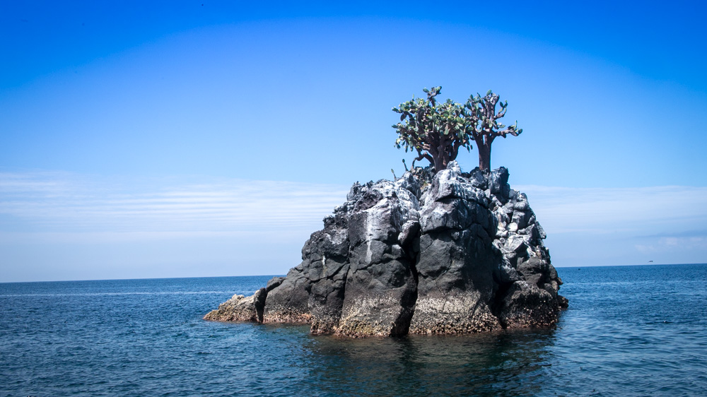

Galapagos
The islands are a long way from anywhere. Notable: 97% of the space is national park, which is to say that most of the lizards and finches will have never seen humans. Perhaps not so true for ancient tortoises, which may remember the depradations of whalers.

Fun facts about frigate birds: Largest wing-area-to-body-weight ratio of any bird. Masters of vagrancy, individuals recorded 500km from land, 4000m altitude, 4000km distance traveled (different birds, presumably). For a seabird, they are poorly waterproofed and avoid getting wet. What about rain? I'm told that they rise above the clouds.

The galapagos prickly pear is ubiquitous.